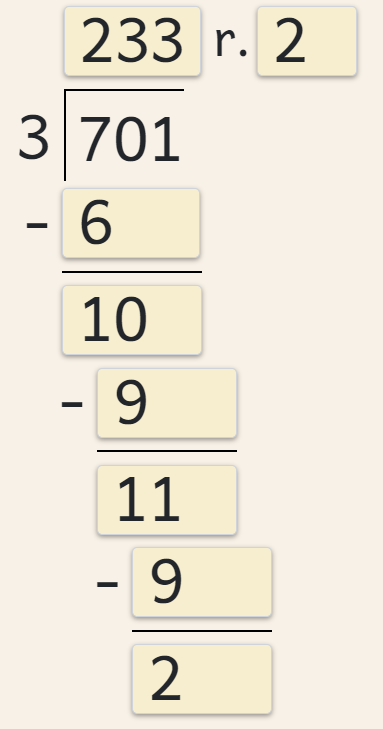
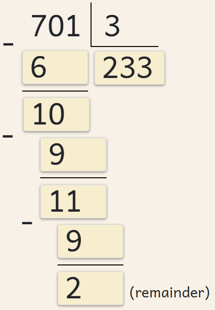

Content
Mental arithmetic (also known as mental math, mental calculation, and the mental method) is the ability to perform mathematical calculations in one's head without using a calculator. Strong mental math skills are essential not only for understanding the fundamental principles of mathematics taught in primary/elementary school but also for mastering the smooth and accurate execution of mathematical procedures. In addition, mental math is an excellent brain exercise that improves a child’s memory and attention span. Effective mental math requires plenty of practice and patience. Looking for maximum results? Practice daily—systematic work ensures consistent and sustainable progress.
sudEdu provides
- A platform to practice basic arithmetic operations (addition, subtraction, multiplication, division, and division with remainders) at different difficulty levels, depending on the user's age and skills.
- The possibility to practice solving equations with an unknown addend, minuend, multiplicand, multiplier, dividend, or divisor.
- The possibility to practice for a set duration of time or a set number of questions.
- The possibility to explore your most common mistakes.
- A platform for practicing mental arithmetic in a sustainable way that doesn't require additional preparation time or the use of paper.
Learning Content
The content of the sudEdu platform is tailored based on the latest Lithuanian national primary education guidelines. However, the site's content is not grouped by grade levels and is instead intended to be used based on individual needs and preferences.
Below, you can find an overview of the different options and settings provided on the platform.
ARITHMETIC OPERATION
Choose to practice:
- Addition
- Subtraction
- Addition and subtraction
- Multiplication
- Division
- Multiplication and division
- Mixed operations
DIFFICULTY
Choose the difficulty:
- Addition:
- 1-digit numbers up to 10
- 1-digit numbers up to 20
- 2-digit and 1-digit numbers up to 20
- 2-digit and 1-digit numbers up to 100
- 2-digit numbers up to 100
- Numbers up to 1,000
- Numbers up to 10,000
- Numbers up to 1,000,000
- Subtraction:
- 1-digit numbers up to 10
- 1-digit from 2-digit numbers up to 20
- 1-digit from 2-digit numbers up to 100
- 2-digit numbers up to 100
- Numbers up to 1,000
- Numbers up to 10,000
- Numbers up to 1,000,000
- Multiplication:
- Multiplication table
- 2-digit by 1-digit numbers
- 3-digit by 1-digit numbers
- 4-digit by 1-digit numbers
- Multi-digit by 1-digit numbers
- 3-digit by 2-digit numbers
- 4-digit by 2-digit numbers
- Multi-digit by 2-digit numbers
- Multi-digit numbers
- Multiples of ten
- Multiples of hundred
- Division:
- Multiplication table
- 2-digit by 1-digit numbers
- 3-digit by 1-digit numbers
- 4-digit by 1-digit numbers
- Multi-digit by 1-digit numbers
- 3-digit by 2-digit numbers
- 4-digit by 2-digit numbers
- Multi-digit by 2-digit numbers
- Multi-digit numbers
- Multiples of ten
- Multiples of hundred
- Mixed Operations:
- Up to 10
- Up to 20
- Up to 100
- Up to 1,000
- Up to 10,000
- Up to 1,000,000
ADDITIONAL DIFFICULTY SETTINGS
- Addition:
- Without carrying over place values
- Carrying over place values
- Subtraction:
- Without regrouping place values
- Regrouping place values
- Multiplication:
- An option to choose an interval for practicing the multiplication table
- Division:
- An option to choose an interval for practicing division based on the multiplication table
- An option to practice division with a remainder
EQUATIONS WITH AN UNKNOWN NUMBER
Choose to practice:
- Simple equations
- Equations with an unknown number:
- Addition:
- Unknown addend
- Subtraction:
- Unknown minuend
- Unknown subtrahend
- Multiplication:
- Unknown multiplicand
- Unknown multiplier
- Division:
- Unknown dividend
- Unknown divisor
SIMPLE OR LONG CALCULATION
Equations can be solved in a simple linear form or using:
- Long addition
- Long subtraction
- Long multiplication
- Long division
VERSIONS OF LONG DIVISION
Several formats of long division are available:
- US/UK/Indonesian version 
- Eastern European version 
Tips for Students
- Practice DAILY!
- Learn progressively: start with easier tasks, move on to more complex ones, and progress from simple equations to equations with unknown numbers.
- When choosing the duration of practice, monitor whether your calculation speed is improving. Try to beat your record!
- Analyze common mistakes. Spend more time practicing equations that seem more challenging for you. Review and practice different mental math strategies. If needed, seek help from a friend, teacher, or parent.
- Your main goal is to become confident in your mental arithmetic skills! Good luck!
Tips for Parents
Mental math is an important skill that should be developed from an early age. Parental support and involvement can greatly contribute to success in this area. Practice is crucial for improving any skill—math is no exception.
- Encourage your child to practice mental math for at least 10 minutes a day. Practice together by setting individual challenges: choose the same number of problems but vary the difficulty.
- Discuss completed tasks with your child. By selecting appropriate problems, guide their learning in the right direction.
- Review common mistakes together—this will help your child identify and address any learning gaps.
Tips for Teachers
It is important to consider each student's individual learning needs. Regular and systematic use of this digital tool will encourage students to apply and reinforce a variety of mental math strategies and identify the ones that are most suitable and effective for them. Consistent practice will create favorable conditions for developing strong mental math skills.
- Daily “warm-up” at the beginning of math class. The teacher and students agree on the content, duration, or number of problems to complete. This preparation does not require any additional preparation time from the teacher and provides clear benefits to student learning. The most common mistakes summary available after each session can help both the teacher and student identify learning gaps and plan next steps. The platform sudEdu is accessible on computers, tablets, and mobile phones.
- Targeted additional activities during lessons. After learning a new topic (for example, the multiplication table), students can practice mental math individually by selecting relevant learning materials.
- Assigning homework. DAILY practice for at least 10 minutes is an effective brain exercise with long-term benefits: strong mental math skills boost student confidence, self-esteem, and motivation to learn.
Marking
The message displayed at the end of each session depends on the percentage of correct answers:
- No questions answered: 'Try again!'
- 0% - 60%: 'Ask for some help!'
- 61% - 70%: 'You're learning!'
- 71% - 94%: 'Very good! Well done!'
- 95% - 100%: 'Perfection! Well done!'
Have any questions or suggestions? Contact us! Our email address is: sudedult@gmail.com